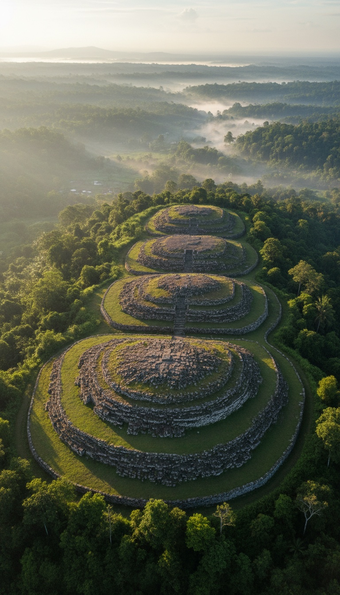

A pyramid in Indonesia returned core sample dates of 27,000 years. That number is not a rounding error. It predates agriculture, writing, and every civilization with a name in the historical record. The question is not whether the site is that old. The question is who was organized enough to build it.
This is Gunung Padang. A terraced megalithic site on a hill in Cianjur Regency, West Java. Five terraces of columnar basalt stones arranged across a 15-hectare hilltop. Visible to anyone who walks up there. What was not visible is what sits below it. In 2023, a drilling team pulled that out of the ground.
The results do not fit inside any archaeological framework built around a 6,000-year timeline of human civilization. A terraced pyramid with four underground chambers and three distinct construction phases spanning 24,000 years requires a builder. The core samples found the building. The field has not found the builder.

The Drill and the Numbers
Geologist Danny Hilman Natawidjaja led the excavation team into Gunung Padang in 2023. Natawidjaja works for Indonesia's National Research and Innovation Agency, known as BRIN. His team extracted core samples from four distinct depth layers beneath the five terraces. The results appeared in the peer-reviewed journal Archaeological Prospection in October 2023. The paper is in the public record.
The shallowest layer of worked stone dated to 3,500 to 8,000 years before the present. The second layer returned dates of 9,000 to 14,000 years ago. The third layer reached 22,000 to 25,000 years. The deepest layer, the one that sits at the base of the construction sequence, returned dates of 25,000 to 27,000 years before today.
The study applied radiocarbon dating to organic material recovered from each depth, cross-referenced against the stratigraphy of the stone layers themselves and electrical resistivity surveys run across the site. Three independent lines of evidence. All three returned internally consistent date ranges at every depth the team sampled. The dates are not contested by the instruments that produced them.
What 27,000 Years Actually Means
Agriculture began around 10,000 BCE in the Fertile Crescent. The city of Uruk in southern Mesopotamia, the oldest complex urban center in the recognized archaeological record, rose roughly 6,000 years ago. The Giza pyramids were constructed approximately 4,500 years ago. Writing appeared in Sumer around 5,500 years ago.
Twenty-seven thousand years ago, none of that existed. The human population of Earth lived in small mobile bands. No permanent settlements. No quarrying operations at scale. No organizational structure capable of coordinating labor across a 15-hectare terraced construction site. The civilization required to build Gunung Padang's lowest layer does not appear in any textbook currently in print, because according to every textbook currently in print, that civilization did not exist.
One of them is wrong. The textbooks were written before the drill ran. The core samples were not.
Four Chambers Nobody Was Supposed to Find
Ground-penetrating radar surveys conducted in 2012, led by a team that included researchers from Padjadjaran University in Bandung, identified large sub-surface cavities beneath the stone terraces. The 2023 Natawidjaja drilling confirmed the radar readings. Four chambers constructed from worked stone sit below the visible surface of Gunung Padang. The deepest chamber sits approximately 15 meters underground.
These are not natural voids. The walls of the chambers are built from the same columnar basalt columns that appear across the five visible terraces above ground. Consistent shaping marks at every depth. The same material, the same technique, the same construction logic running from 15 meters below the surface all the way up to the top terrace you can stand on today. The surface construction and the underground chambers are a single continuous project, built in phases by the same hand across millennia.
Four chambers built from worked stone sit 15 meters underground. The Geological Agency of Indonesia spent decades calling this hill a natural volcanic formation. The drill found finished walls at every depth.
The Institutional Record That Collapsed
The Geological Agency of Indonesia argued in survey literature prior to 2014 that Gunung Padang was a natural volcanic formation. Their published position was that the surface terracing was placed by Bronze Age communities within the last 2,000 years and that no construction activity predated that window. That is the version of the site that held in official Indonesian heritage documentation for most of the twentieth century.
The Oudheidkundige Dienst, the Dutch East Indies archaeological service, first formally documented the site in a 1914 survey conducted out of Batavia. The surveyors recorded the unusual regularity of the basalt column arrangement. They filed the classification without drilling. That classification entered the record unchallenged for a hundred years because nobody tested it against a drill until 2012, when Natawidjaja's team ran the radar, and again in 2023, when they ran the core samples.
The 2023 paper did not overturn a fringe theory. It ran physical evidence against an institutional claim. The Agency's claim was that the sub-surface structure was geological. The drill found finished stone walls at 15 meters. Geological formations do not produce finished walls. The institutional claim collapsed against the sample data, and the sample data is published in peer review for anyone to read.
The Younger Dryas and the Return to the Hill
The Younger Dryas was a sudden return to glacial conditions that struck roughly 12,900 years ago and lasted until approximately 11,700 years ago. Temperatures dropped. Coastlines shifted. Populations across the Northern Hemisphere that had established settlements lost them. Sea levels that had begun rising after the Last Glacial Maximum temporarily reversed. It was the kind of event that erases civilizations from the surface record entirely.
The Gunung Padang construction record shows three distinct phases. The base layers at 25,000 to 27,000 years. The middle layers at 22,000 to 14,000 years. The upper terraces after 9,000 years ago. The gap between the middle and upper layers coincides with the Younger Dryas window. Construction stopped during the disruption. Construction resumed after it ended. This is not an abandoned site. This is a site that was returned to after a planetary climate event. Three phases of building on a single structure across a 24,000-year span. The oldest continuously maintained structure in the accepted archaeological canon is Gobekli Tepe in Turkey, dated to 11,500 years ago. Gunung Padang's lowest layer predates Gobekli Tepe by more than 15,000 years.
The Landmass That No Longer Exists
Twenty-seven thousand years ago, the island of Java was not an island. It was part of Sundaland, a subcontinent connecting modern Indonesia to mainland Southeast Asia across land that now sits under the South China Sea and the Java Sea. Sea levels during the Last Glacial Maximum stood approximately 120 meters lower than today. The coastline of Sundaland extended hundreds of kilometers beyond where the water sits now. The builders of Gunung Padang were not isolated on a remote tropical island. They were in the interior of a large, connected landmass.
Stephen Oppenheimer's 1998 study "Eden in the East" traced population dispersal patterns out of this region after Holocene sea level rise began and placed a pre-flood maritime culture in Sundaland with sophisticated construction and navigation capabilities. The civilization that built Gunung Padang did not vanish. Its coastal settlements and trade routes are now on the sea floor of the Java Sea, sitting under 120 meters of water, unexcavated. The hill survived because it was high enough to outlast the flood. What is below the Java Sea has not been inventoried. Nobody has looked.
The five terraces at Gunung Padang still stand on the hill in Cianjur. You can walk up there today and put your hand on the same basalt columns that were shaped and stacked by whoever arrived here 27,000 years ago. Below those columns are four chambers, 15 meters of constructed stone walls, and a construction timeline that contradicts the standard account of human history at every depth the drill reached. The oldest pyramid on Earth is not in Egypt. It is not in Mexico. It is on a hill in West Java, and it was built before the last ice age ended by a civilization that has no name in any textbook.
The Natawidjaja paper documents what was built and when it was built. It does not document what is inside the four chambers. The drill went through the walls. No published survey has mapped the interiors. Four rooms built by an unknown civilization 27,000 years ago are sitting sealed under a hill in Indonesia. Whatever was placed inside them is still there. It has been waiting since before agriculture existed, before writing existed, before any civilization we have ever named drew its first breath. The excavation team has not announced when they intend to open them.
Before you go
7 books the Vatican doesn't want you reading. Free PDF — the texts they cut, with sources. Joined by 140+ Inner Circle members.
No spam. Unsubscribe anytime.
Go deeper
The Hidden Canon, Vol. I — Enoch. Jubilees. Thomas. Mary. Judas. 90 pages, 14 chapters, every receipt cited. The books your Bible quietly removed.
Read the Canon →Books that informed this investigation
As an Amazon Associate, Hidden Epoch earns from qualifying purchases. Cost to you: nothing.
Research safely
The VPN we use to research without being tracked. First 3 months free.
Get NordVPN →